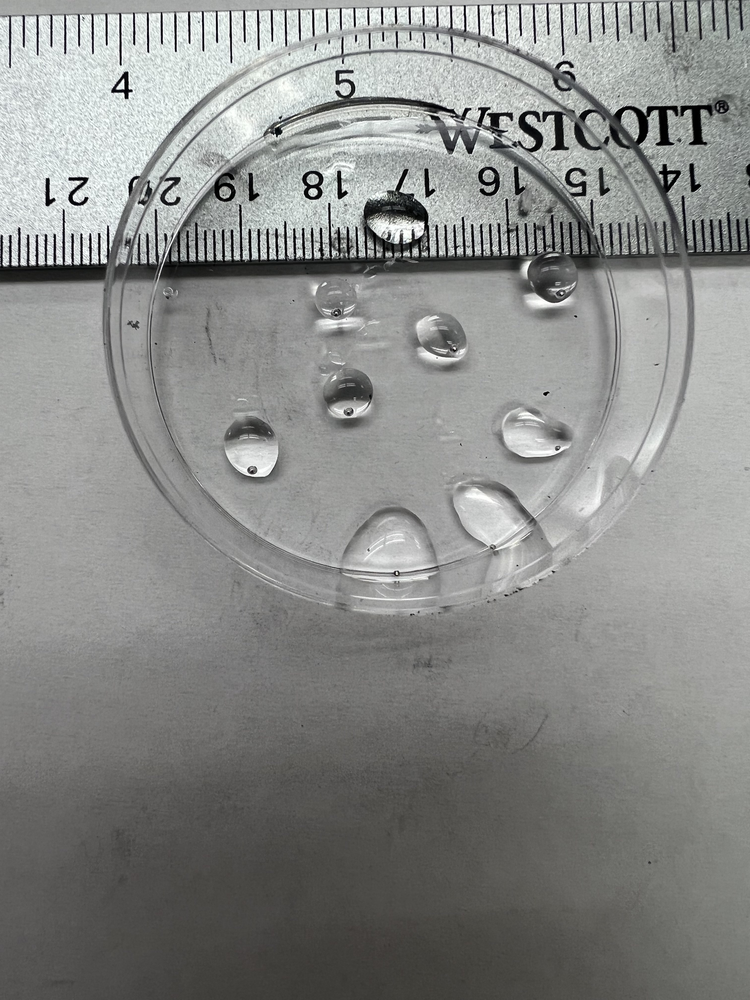
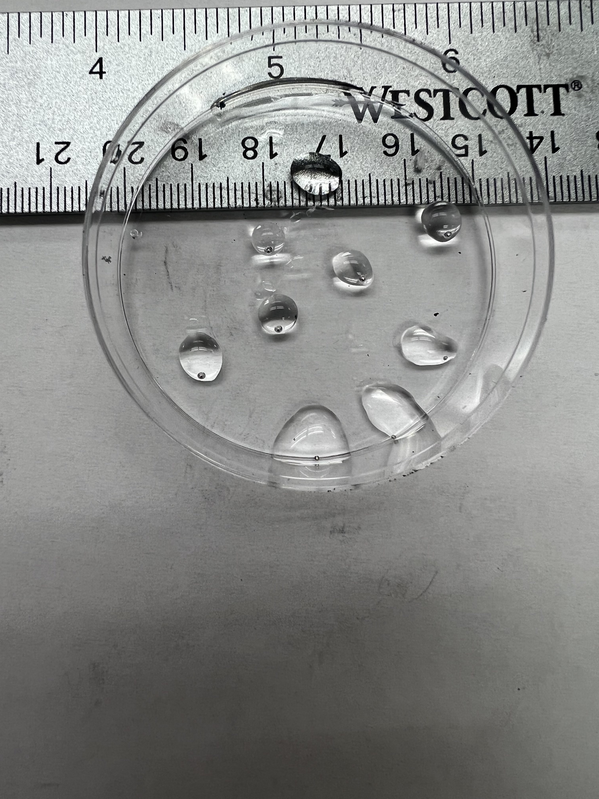

Liquid Metal

 

Galinstan Indium (GaIn) is an alloy in which is liquid at room temperature. Unlike its adversary, Mercury, it is non-toxic to humans. With the physical capabilities of being a liquid, along with the thermal and electrical capabilities of being a metal, we can use this alloy as a reconfigurable circuit. Our goal is to apply a voltage through a specified substrate filled with NaOH in order to actuate this liquid metal. By applying a voltage across liquid metal, an EDL (electron double layer) is formed and allows it to move towards our annode.
In order to obtain a basic understanding of how liquid metal behaves, we first created a substrate of a square 3cm x 3cm cutout from PDMS (polydimethylsiloxane). This substrate was then filled with a ball of LM (approximately 0.5cm in diameter) and NaOH solution. Four electrodes of Nickel strips were placed on each side of the walls. Each electrode is connected to our power source. Applying a voltage across each electrode provided movement in each direction. A circuit was also made and programmed through an arduino. An arduino was useful to record velocity as it created a definite time interval for actuation. This project is a very useful tool for hotspot cooling since liquid metal is thermally conductive. As the computer world advances and liquid cooling becomes more apparent, our future could look towards using liquid metal.
In an ideal form of use from liquid metal is to use it for circuitry. To accomplish this, we fabricated microchannels in widths scaling from 30 microns to 150 microns. To put into perspective, an average person’s hair is about 75 microns. This will allow us to open our eyes to reconfigurable circuits. These circuits could stem out to projects such as antennas, IRS (intelligent reflecting surfaces), and so forth. two forms of actuation is possible. First is CEW (continuous electro wedding). By applying a DC signal across our liquid metal, we are able to achieve CEW. However, if we apply a AC signal across our liquid metal, we achieve ECA(electro capillary action). The main difference is that instead of just moving liquid metal as a whole, it starts stretching in the direction of actuation. This is very useful in increasing height in our antennas (to change frequencies), and changing shapes in IRS surfaces (to change phases).
We can very much hope to see liquid metal in the future to come. In our generation of networking, our mobile devices run 5G frequencies in the gigahertz range. 6G frequencies require terrahertz ranged signals. One way to accomplish this is to use liquid metal circuits in the nanometer level. This is only a prelude the main uses of liquid metal and the capabilities to come.